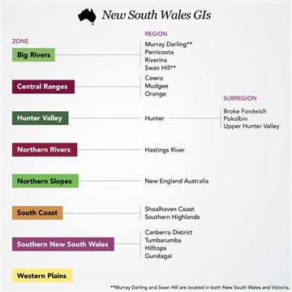
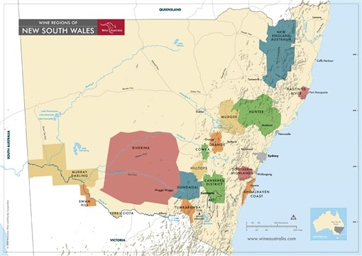

James Busby is their ‘father’ of viticulture, even though there were ones before him. Went to gather vine cuttings from Spain and France.
There is some phylloxera, but it is contained. Hunter valley, for instance, is bug free as of today.
Key moment: in 1912 “murrumbidgee irrigation area’ massive project that brings water from Murrumbidgee (a tributary of the Murray river) to riverina region. About 29% of Australia’s total wine is produced here.
The main Climatic influencers: Pacific Ocean and The great dividing range.
Hunter valley zone contains Hunter GI, which has 3 GI sub-regions: upper hunter valley, then two that get made fun of : Broke Fordwich and Pokolbin. Traditionally Pokolbin and Fordwich were an area known as “lower hunter valley” but the authorities said it didn’t merit a region…Lot’s of people say hell no to the weird “pokolbin” name. Other sub-regions: (not all GI) Allandale, belford, dalwood and rothbury (in addition to Pokolbin and Fordwich)
Hunter Valley Climate: warm and wet (one of the most) Sub-tropical and humid. Upper Hunter is Region IV (suited for fortified wine) and hotter than Riverland (south Australia’s hottest GI) but less so than Riverina!!! So, ripening comes early and unimpeded (hot nights).
Top varieties in Hunter GI lower hunter: Semillon, chardonnay, verdelho, shiraz (with a smattering of Merlot and Cabernet Sauvignon).
In the past, Semillon was sold as “hunter riesling” which kind of points to its acidity. Usually the alcohol is low (10-12%) very acidic (pH of around 2.9) No oak, no lees is common. Usually aged for is makers for many years prior to release (where it can gain browned toast and creme caramel notes to go with its lemon and grass youthful notes)
Top Examples: Tyrrell’s “Vat 1” and Brokenwoods’ “ILR Reserve” 5-6 years after vintage released.
Note: Tyrrell was the first to bottle varietal chardonnay in australia “1971 Vat 47 Pinot Chardonnay”
There are 3 regions in Central Ranges. They are on the Western slopes of the Great Dividing Range, near a town called Bathurst (125 miles west of Sydney).
Mudgee GI (the oldest) Compared to hunter GI, it is drier, sunnier and less humid. Larger Diurnal shifts too! Wines tend to be concentrated and highly colored. Cabernet Sauvignon, shiraz and merlot. 80% red grapes.
South West of Mudgee: Orange GI. youngest, coolest and most exciting region in the Central Ranges. Highest region in the COUNTRY overall. It begins at the 600 meter line, goes up to the 1000 meter mark.
Highest point: Mount Canobolas, an extinct volcano. Source of the region's rich, basalt-derived soils. Same grapes as Mudgee, but also some Sauvignon Blanc and Pinot Noir.
Then Cowra GI: southernmost and warmest region. Known for its soft, generous chardonnays.
You take the South Coast and Northern Rivers, and that’s almost the entirety of the New South Wales coastline. (just a little segment of hunter valley).
Within Northern Rivers: Hastings River GI. Right on the ocean. VERY HOT. Region V. Experiences the most rainfall during the growing season in Australia. Some early picked Semillon can be like hunter valley, but in general, not considered a fine wine region.
Northern Slopes’ New England Australia GI, make some cooler shiraz. But honestly, it doesn't make a ton.
The rest of the little regions: who cares. Shoalhaven Coast GI. Best known for wine from Chambourcin: a red French hybrid.
Southern Highlands GI, more potential. Surprisingly, Tempranillo is the most planted.
Along the Victoria border, west of Great Dividing Range. The big rivers: Murray and Murrumbidgee. While South Australia’s Riverland is the largest single region in Australia, Big Rivers is the top producing zone in the country. Chardonnay, then Shiraz and Semillon.
McWilliams and De Bortoli were early leaders, but now Casella Wines leads. They produce yellow tail.
This region isn’t just mass-market though. They can make small amounts of high-end Botrytis dessert wine. 1958 McWilliam was the first one to give it a try. De Bortoli took the ball and ran with it. Now their “Noble One” (debuted in 1982) botrytis semillon is the star.
Located within the Great Dividing Range, and encompassing the Australian Capital Territory (They call it the ACT).
Canberra District GI surrounds the national capital (Canberra) and is the most important region for the zone. Mild, continental climate, kind of like the northern Rhone.
Region really started when, in 1971, Edgar Riek planted vines on the shores of Lake George and John Kirk planted his Clonakilla vineyard in Murrumbateman.
Hilltops GI: Warm, continental. Cabernet Sauvignon and Shiraz. Red, about 4 in 5. Compared to Canberra, fruit tends to be deeper in color, lower acid and more robust tannins and darker fruit
Gundagai GI (has Murrumbidgee flowing through it) is next to Hilltops southern border. Some vineyards have emerged here, but region is still in its infancy. Tumbarumba GI, south of Gundagai, in the foothills of the Snowy Mountains, and has a cooler climate, well suited to sparkling wine production. Chardonnay and Pinot Noir are about 90% of fruit.
 Return to the main page